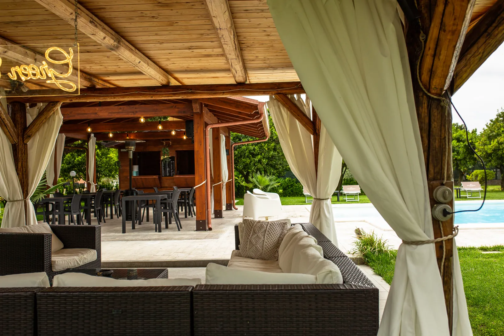

Il gazebo-bar di giorno · foto della struttura, 2023
Capitolo 01Mattina
Ci si sveglia nel verde. La colazione è fatta in casa.
Da maggio a settembre si fa colazione in sala ristorante: all'italiana o all'americana, anche a buffet, anche senza glutine. Da ottobre ad aprile la colazione è un box consegnato al check-in, da gustare in camera.
la gentilezza della signora Elvira la buonissima colazione fatta in casaMaria · Booking · 23/10/2026 · voto 10
Agrumeto, orto e galline.
Aranci e limoni con il profumo delle zagare, albicocchi, fichi, un grande orto e le galline per le uova. Quello che cresce qui finisce a tavola: spremute, marmellate, crostate, ciambellone, limoncello e liquore al mandarino fatti in casa.
Il silenzio e la riservatezza sono tra le cose che gli ospiti lodano di più.
mag–setcolazione in sala
ott–aprbox in camera
22–08ore di silenzio